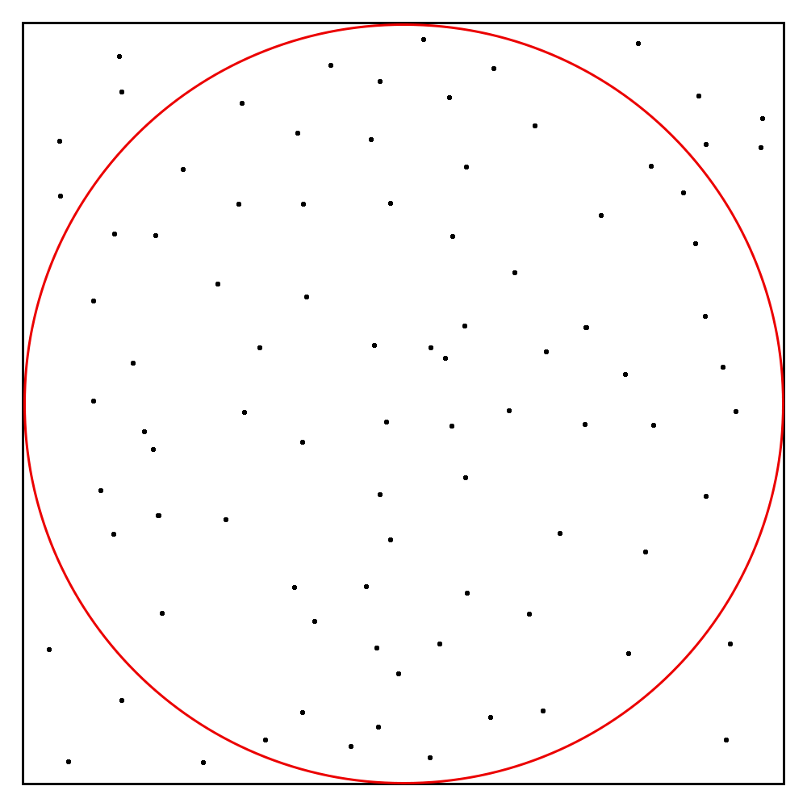
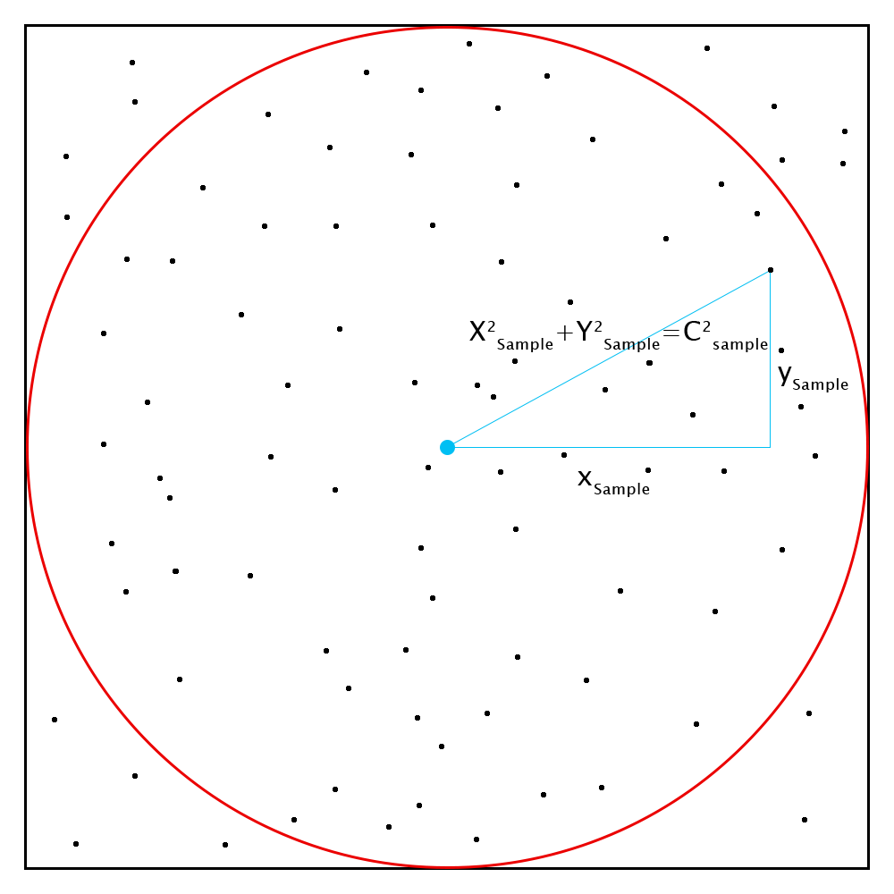

Estimating Pi with Monte Carlo Simulation
About the Problem
Estimating Pi is the "Hello World" of Monte Carlo simulations. It is often used as the first example of GPGPU programming, as the problem is trivially parallelizable (as are most monte carlo problems, by their nature).
A lot of people don't understand how we can possibly compute pi, and so the problem is a fun demonstration. It's also a pretty good interview question!
The Setup
Given a perfect random number sampler, can we use it to somehow estimate the value of pi?
We first start by setting up our problem, and visualizing what it might look like. If we can set our sample to return (x,y) samples in the range of -radius...+radius, then, after performing a few samples, we might have a situation that looks something like this:

How do we use those random samples to compute Pi? Well, we can infer that the ratio between samples landing inside the circle vs. the total number of samples is equal to the ratio between the areas of the two:
C_inside / C_total = radius^2 * pi / (2 * radius)^2 (approx)
Solving for pi, we end up with:
pi = 4 * C_inside / C_total (approx)
We've omitted one important detail: How do we check if a sample is within the circle? That turns out to be easy, if you paid attention in 6th grade math class. Pythagoras gave us the answer many years ago:

In order to check whether the sample is inside a circle of radius r, we compute:
Sqrt(x*x + y*y) < r
We now have all the building blocks required in order to write a short program to simulate this 10 million times.
public static void Main(string[] args)
{
double radius = 1.0;
int cInside = 0;
int cTotal = 10000000;
var rand = new Random();
for (int i = 0; i < cTotal; i++)
{
var x = rand.NextDouble();
var y = rand.NextDouble();
var isInside = Math.Sqrt(x*x + y * y) < radius;
if (isInside)
cInside++;
}
var pi = 4 * cInside / (double)cTotal;
Console.WriteLine("Pi is approx {0:0.0000}", pi);
}
The output:
Pi is approx 3.1419
Well, that was easy! Granted, it's not too accurate, but that does give 4 significant figures for only 291 ms of runtime (test with an i7 4930K).
But wait, you mentioned GPGPU and parallelization! This is single threaded, how can we improve it?
Let's try using PLINQ to parallelize it, and re-write the program as such:
public static void Main(string[] args)
{
double radius = 1.0;
int cInside = 0;
int cTotal = 10000000;
var parallelCount = Environment.ProcessorCount;
cInside = Enumerable.Range(0, parallelCount).AsParallel().Select(_ =>
{
var cInsideLocal = 0;
var rand = new Random();
for (int i = 0; i < cTotal; i++)
{
var x = rand.NextDouble();
var y = rand.NextDouble();
var isInside = Math.Sqrt(x*x + y * y) < radius;
if (isInside)
cInsideLocal++;
}
return cInsideLocal;
}).Sum();
var pi = 4 * cInside / (double)(cTotal * parallelCount);
Console.WriteLine("Pi is approx {0:0.0000}", pi);
}
On an i7 Extreme with 6 logical cores it can run 12 threads with hyperthreading in parallel. This code takes 460ms to execute (about 60% longer overall), but it is in fact computing 12x more samples than before, as the operating system is reporting Environment.ProcessorCount = 12. This means the program is now about 7.5x faster than before.
Some Notes:
- I decided to use Random() for the random number generator, it should be random enough for our little hello world demo (we should be able to get the first 5-7 digits of pi).
- Program utilizes all threads on your CPU to run simulations in parallel. It will literally thrash your CPU to 100%.
I'll be posting a CUDA version of this code soon.